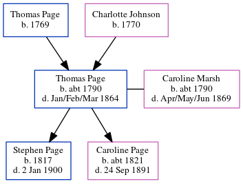

Thomas Page c1790 - 1864
[ Home ] | [ Calendar ] | [ Surnames Index ] | [ Errors ] | [ Family History ]A labourer and the child of Thomas Page and Charlotte Johnson, Thomas Page, the 3 times great-grandfather of Nigel Horne, was born in Newington, Kent, England c. 17901,2,3,4, was baptised in Newington, Hythe, Kent, England on 30 Jan 1791 and married Caroline Marsh (with whom he had 2 children: Stephen and Caroline Bromley) in Folkestone, Kent, England on 13 Jul 18115.
During his life, he was living in Folkestone in 18411; and in Elham, Kent, England in 18512 and in 18613 which is where he died in Jan/Feb/Mar 18644 (not the Thomas Page who died 12/12/1868 - that one was a master mariner).
Parents
- Thomas was born in 1769
- Charlotte was born in 1770
Children
- Stephen was born in 1817
- Caroline Bromley was born c. 1821
Citations
- 1841 England Census Online publication - Provo, UT, USA: The Generations Network, Inc., 2006.Original data - Census Returns of England and Wales, 1841. Kew, Surrey, England: The National Archives of the UK (TNA): Public Record Office (PRO), 1841. Data imaged from the National
- 1851 England Census Online publication - Provo, UT, USA: The Generations Network, Inc., 2005.Original data - Census Returns of England and Wales, 1851. Kew, Surrey, England: The National Archives of the UK (TNA): Public Record Office (PRO), 1851. Data imaged from the National
- 1861 England Census Online publication - Provo, UT, USA: The Generations Network, Inc., 2005.Original data - Census Returns of England and Wales, 1861. Kew, Surrey, England: The National Archives of the UK (TNA): Public Record Office (PRO), 1861. Data imaged from the National
- England & Wales, FreeBMD Death Index: 1837-1915 Online publication - Provo, UT, USA: The Generations Network, Inc., 2006.Original data - General Register Office. England and Wales Civil Registration Indexes. London, England: General Register Office. © Crown copyright. Published by permission of the Cont
- Familysearch.org (www.familysearch.org)
Family Tree
Map
Generated by ged2site. Last updated on Jul 3, 2024
Known Issues
Listed in the residence for 1841, but spouse Caroline Marsh is not